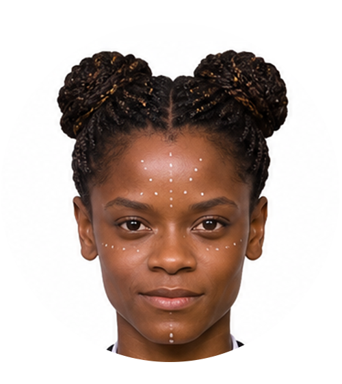
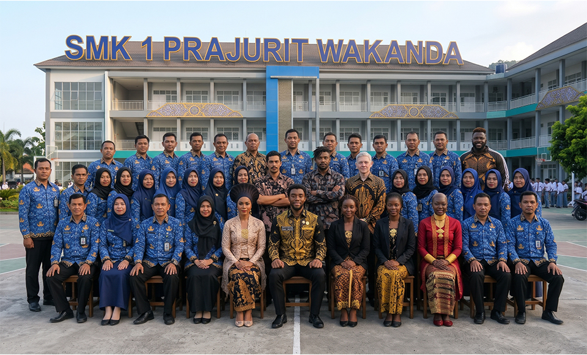

Sumber Daya Manusia
Pimpinan & Tenaga Pendidik Kami
SMK PRAJURIT 1 WAKANDA didukung oleh 78 guru dan staf kependidikan lulusan perguruan tinggi terkemuka yang memiliki sertifikasi pendidik serta kompetensi asesor industri.

Kepala Sekolah
Drs. H. T'Challa Wijaya, M.Pd.
Bidang Keahlian: Manajemen Pendidikan Vokasi & Kepemimpinan Sekolah
Memimpin pengembangan kurikulum berbasis industri, tata kelola mutu sekolah, serta kemitraan strategis dunia usaha di SMK PRAJURIT 1 WAKANDA sejak tahun 2020 dengan visi mencetak lulusan yang unggul, terampil, dan berprestasi.
Tim Pengajar
Keluarga Besar Guru & Staf
Pendidik dan tenaga kependidikan yang bekerja bersama membimbing siswa.

Daftar Guru
Koordinator Program Keahlian & Tenaga Pendidik SMK PRAJURIT 1 WAKANDA.